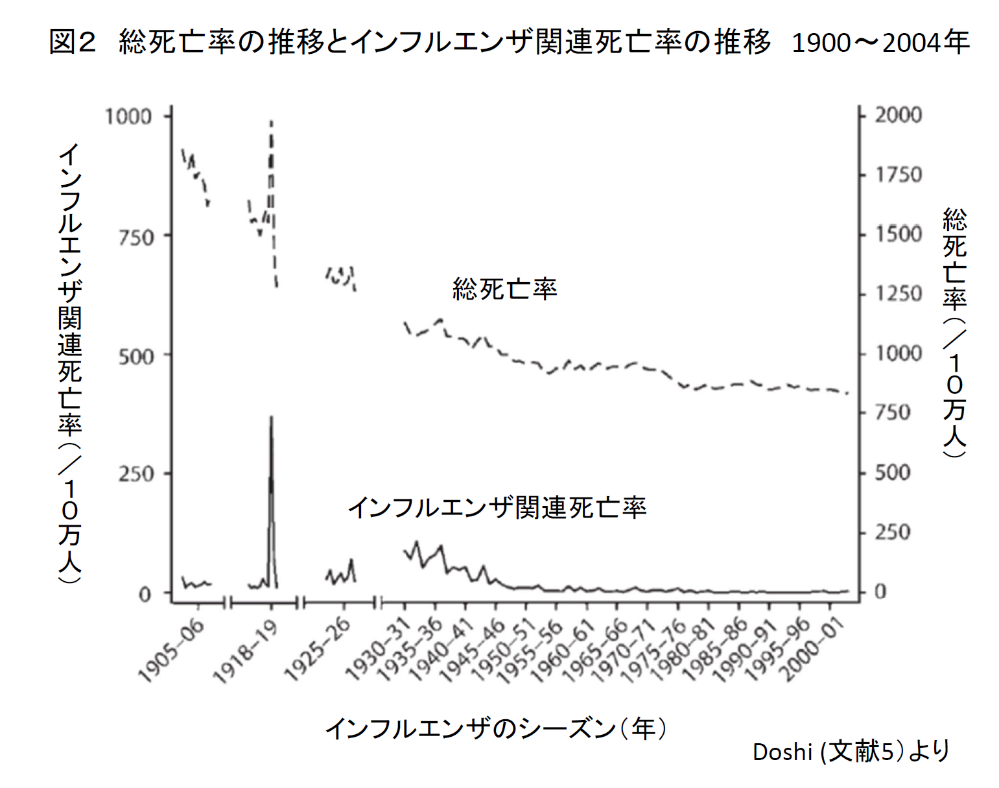
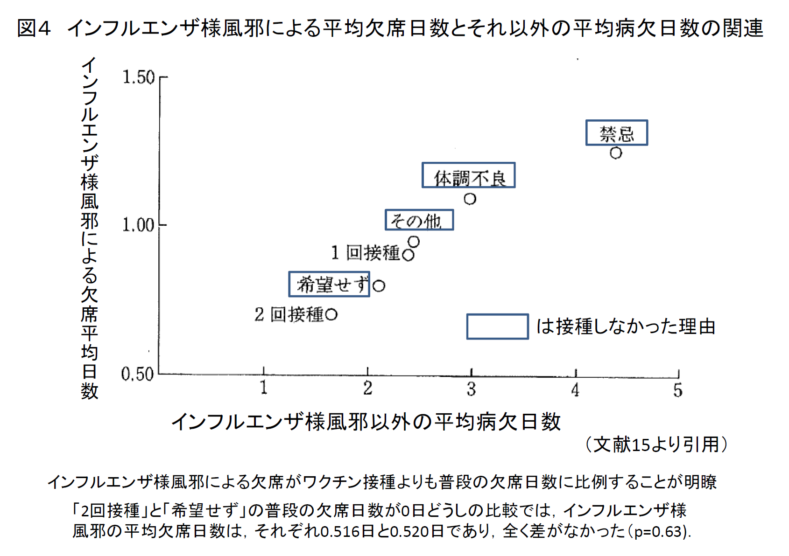

「新型インフルエンザ等対策特別措置法（特措法）」が2012年3月9日、国会に上程されました。2009A/H1N1インフルエンザは季節性インフルエンザよりはるかに軽症であったのに、日本は過剰な対応をとって社会を混乱に陥れました。特措法は、その反省に立ってと称していますが、何ら反省になっていません。
このたび、TIP誌に、その特措法の問題点について、感染症と生命倫理のエキスパートである谷田憲俊氏と、NPO法人医薬ビジランスセンター（薬のチェック）の浜が共同執筆した表題の論説を、事態の重要性に鑑み、TIP誌より転載します（なお、TIP誌のスペースの関係で割愛した文献タイトルおよび図４点を追加し、一般向けに一部解説を追加しました）。
以下TIP誌「正しい治療と薬の情報」2012年3月号を改訂 PDFはこちら
人々が新型インフルエンザに恐怖を覚えるのは，1918年スペインかぜで多数の若年者が死亡したからである．しかし，その現象は医原性であったので，新型インフルエンザ自体に対する恐れは杞憂である．実際，2009A/H1N1インフルエンザは季節性インフルエンザよりはるかに軽症であった．それにもかかわらず，日本の行政当局や関連学会は過剰な対応を採って社会を混乱に陥れた．その反省に基づくと称する新型インフルエンザ等対策特別措置法（特措法）が2012年3月9日，国会に上程された．しかし，その実態は同じ混乱を再び引き起こそうとするものである．インフルエンザには医科学に基づいた感染症対策が求められ，危機管理の施策は合理的な国際基準に則らなければならない．
インフルエンザが注目されるのは，流行の発生と広がりの速さによる．とくに，A型は十数年から数十年を経て亜型が変わる大変異を起こすと，人々は新型に対する抗体がないためパンデミックを起こすとされており（註1），人々がインフルエンザのパンデミックに恐怖を覚えるのは，1918年スペインかぜで多数の若年者が死亡したからである[1]．
一方，2009A/H1N1インフルエンザは，メキシコの巨大養豚場に近接した村に始まった．2009年2月下旬からインフルエンザ様疾患が多発し，3月には村の人口の6割，約1800人に発症して死亡も続出した．そのため，スペインかぜの再来とメキシコも世界もパニックに陥った．直に軽症と判明したが，パニックが是正されることなく，世界中が大混乱に陥った．とりわけ，非理性的な日本の対応は国際的にも注目された．
この度，改正されたと称する新型インフルエンザ等対策特別措置法（特措法）が2012年3月9日，国会に上程された．しかし，2009年の大混乱への反省は見られず，再び同様の混乱が生じることは明らかである．そこで，インフルエンザには医科学に基づいた感染症対策が求められること，危機管理の施策は合理的な国際基準に則る必要があることを，特措法に焦点を当てつつ示したい．
註1：亜型がそれまで流行していた型と異なる場合，そのウイルスを「新型」と呼び，パンデミック，すなわち世界的大流行を起こしうるが，それは重症インフルエンザが世界的に大流行するという意味ではない．1918年のスペインかぜで死亡者数が多かった原因は「新型」であったからではなく，次項で述べるように，アスピリンなど解熱剤の過剰使用であった．
スペインかぜは1918年5月の流行当初，他の新型インフルエンザと同じく死亡率は無視できる程度であり[1,2]，同年1月から8月の死亡率は前年の季節性インフルエンザより低かった．問題は，その後の第二波流行時に25～29歳の米国内の屈強な若年兵に死亡が多発したことであり，それも1918年9月後半から致死率3％と重症化率が跳ね上がったことが目立つ．この現象が弱毒性ウイルスから強毒性ウイルスに変異した結果であるとされ，今日の新型インフルエンザの恐怖につながった．．
その突然の死亡率上昇は，1918年スペインかぜの最大の謎であった．同時期の新感染にもかかわらず，米軍兵の致死率は2.1％から10％と駐屯地によって大きな差違があり，全米でも地域により死亡率に大きな差違が表れていた[1,2]．この現象は同一期間なのでウイルス変異では説明できず，生活や周囲環境，天候，人口密度，さらには予防法にも違いはなかった．ここで，1918年9月という時期と，サリチル酸（アスピリン）をウイルス疾患に使用したときの害反応を合わせると謎が解ける[2]．
1917年にアスピリンの製造特許が切れ，多くの製薬会社が利益を求めてアスピリン製造に群がり，巷にアスピリンがあふれていた[2]．スペインかぜで激増する高熱患者は，アスピリンに格好の提供先を与え，アスピリン販売量は前年の2倍に跳ね上った．当時は副作用が出るまでアスピリンを増量して，それから少し減量して継続するのが通常の服用法であった．1918年9月13日には公衆衛生局長官が，同26日には海軍が，10月5日にはアメリカ医師会雑誌（JAMA）が，「外国ではアスピリンで症状改善に成功している」とアスピリンをスペインかぜに推奨した[2]．こうして，医師はインフルエンザ患者に大量のアスピリンを用いた．
皮肉にも新患数が減りはじめた秋口に，スペインかぜによる死亡が急増し始め，第二波の流行とされた[1]．
それは海軍で9月後半，陸軍で9月末，そして一般人では10月後半のことで，アスピリンが広く推奨され始めた時期に一致する（表1、図1）．
いずれもアメリカ国内勤務者で，海軍関係者は陸上勤務である．実際の期間は海軍の最終日が 陸軍の計算日初日となる．なお，11月以降は除隊者の数が急増したので，それ以前とは母数が 大きく異なる．クロスビー著『史上最悪のインフルエンザ 忘れられたパンデミック』より[1]．
表の脚注参照
それら兵士の死亡原因は，肺水腫とそれに続く重症肺炎であった．スペインかぜ患者への使用量の1日あたり8.0～31.2ｇは，アスピリン中毒量が1日3～4g以上であることから許容量をはるかに超えており，血管透過性を増し全身臓器の浮腫が起こり肺水腫も起きてくる．その病態こそ後に動物実験やヒトに見いだされたアスピリンなど非ステロイド抗炎症剤（NSAID）による害反応そのものであった．
以上，恐怖の1918年スペインかぜ重症化の主因は医原性であったとわかる．
後に2009A/H1N1インフルエンザと呼ばれる新型インフルエンザをメキシコ政府が公表したのは2009年4月2日であるが，すでにカリフォルニア州に飛び火していた．当初のメキシコの2009A/H1N1インフルエンザでは若年者の死亡が目立ったが，その一方で現地の二次感染者に重症や死亡はなかった．さらに，4月28日以降のメキシコの死亡率は1％以下であり，当初の重症度とは大きく異なる[3]．当初の高死亡率の原因は不明であるが，後者の現象はメキシコにおいても2009A/H1N1インフルエンザが軽症であることの疑いようのない証明となった．
ウイルスは，アメリカ疾病予防センター（CDC）の調査でトリ型とヒト型のウイルス遺伝子が夾雑したブタインフルエンザとされた．WHOが把握する情報に感染者数はないので死亡率は計算できないが，季節性インフルエンザよりはるかに低いことに疑いの余地はない．日本における2010年3月での患者数は推計2066万人，死亡総数は198人なので，単純計算で死亡率は0.00096％である[4]．歴史的にも「新型インフルエンザ」の死亡率は低いと判明している（図2、図3）[5]．
1905~06年は総死亡率の高さにかかわらず，インフルエンザ関連死亡は少ない． このことからも，1918～1946年頃までの死亡率の高さにアスピリンが影響して いた可能性を考える必要があろう．
パンデミックとされなかった年（図示した年および1945年以前の死亡率の高い年） に比較して，パンデミックと言われた年の死亡率は変わらないか、あるいは少ない目 であり，決してパンデミックとされた年の死亡率が高かったわけでない．
WHOは2009年4月25日「国際的に関心を呼ぶ公衆衛生上の緊急事態」と認定した．そして，6月12日に流行の警戒水準がパンデミックを意味するフェーズ6に上げた．後者の時点で，メキシコや他の国々の経験から既に季節性インフルエンザより軽症であることが明白であった．それにもかかわらず，WHOは当初の「死亡率が高い」との立場を崩さず，世界に誤解を与え続けた．また，「パンデミック」とは，単なる「世界的流行」を意味するに過ぎない．しかし，WHOの情報操作ともいえる姿勢のために，世界中が「パンデミック」とは「重症疾患の世界的流行」と誤解して，WHOの言う「パンデミック」を「重症疾患の世界的流行」と勘違いさせられたままであった．
その2009A/H1N1インフルエンザに動員されたWHOの対策は1999年に策定されたもので，高病原性鳥インフルエンザウイルスが変異して人にも高病原性をもたらしうる「新型インフルエンザウイルス」の出現を想定したものであった．また，「インフルエンザワクチン接種」と「抗インフルエンザ剤投与」がパンデミック時の被害防止に有効と考えられ，その方針に則ってWHOはワクチン製造準備や抗インフルエンザ剤の備蓄といった施策を各国に求めてきた．
しかし，その「ワクチンによる予防」「抗ウイルス剤投与」という方針は，「インフルエンザワクチンの有効性は限られる」ことや「抗ウイルス剤の症状改善効果はわずかなうえ，重大な害反応がある」「1918年スペインかぜ重症化の主因は医原性」といった新知見が現れる前に設定された方針である．それらの前提は既に崩壊したが，WHOは新事態に対応できないまま漫然と旧態依然とした対策を継続していた．それらの対策が大きな問題を生じていることは明らかである．すでに新たな知見が蓄積された今，医科学に基づいた方針に改めることがWHOに求められる．
WHOが2009A/H1N1インフルエンザが軽症であると判明した後にもワクチンと抗インフルエンザ剤の使用推奨を継続した要因として，それらの製造企業との癒着が指摘されている．公式にはWHOはその非難を否定しているが[6]，既に莫大な量の抗インフルエンザ剤の寄贈を受け，かつWHOが製薬企業からの寄付金に依存していることは周知の事実である．WHOにとって企業の利益に反するような方針は採用しがたいと推察される．かつてWHOがオセルタミビル（商品名タミフル）の寄贈を受けたときに，「それは継続備蓄をも意味するので後々莫大な負担となる」，すなわち「製薬企業の利益を保証したも同じだ」という批判があったが，それが現実化したわけである．
医学の歴史は“患者を害してきた歴史”でもある．今回の例をみても，人々に恐怖を引き起こしているのはインフルエンザウイルスではなく，恐怖を煽る医師とメディアならびに行政であることがわかる．2009A/H1N1インフルエンザは軽症であることが判明しているにもかかわらず，WHOの医官は「変異ウイルスも見いだされており，いまだ危険は去っていない」という[7]．その医官の論理では“永久に危険は去らない”ことになる．その論理は，「軽症なので大仰な対応は要らない」というあるべき対策と「将来に向けた監視」とを区別しない不合理なものである．不合理な姿勢の延長線上に，今回の特措法の問題は生じている．
通常の季節性インフルエンザよりはるかに軽症であるにもかかわらず，数々の無益で大仰な対策をとった結果が2009A/H1N1インフルエンザ騒動であった．しかし，新型インフルエンザ（A/H1N1）対策総括会議では，「死亡率を少なくし，重症化を減少させるという当初の最大の目標は，概ね達成できた」などの根拠のない自己満足に終わり，反省は不十分なままであった[8]．そのことが，不適切な新たな行動計画（特措法）につながったと考えられる．
スペインかぜへの恐れは杞憂に過ぎないので，新型インフルエンザ特措法が立つ医科学的根拠は存在しない．ただし，重症感染症の蔓延の可能性は残るので，そのための合理的対策が求められる．それは国際的に示される合理的な施策でなければならない．しかし，現行特措法の対策は多くが不合理なので，「新型インフルエンザ」の文言を外したうえで根底から見直す必要がある．その問題について，医学的側面を中心に述べる．
“水際作戦”という名の検疫は，旧約聖書にまで遡る．そして，14世紀ころからヨーロッパではペスト流行時は検疫が命じられ，新参者は30～40日間，孤島などの市外に留まらせた．また，ペスト流行地の港に停泊した船には40日間の検疫が命じられた．今でも，港に入る船は検疫を求められ，発熱患者やネズミの有無を証明しなければ寄港が認められない．このように，検疫は歩行や馬車，船で人が移動した時代の感染症防御策であり，航空旅客のためではない．真に空港で検疫を機能させようとするなら，対象感染症の伝染期間は発症の有無にかかわらず旅客全員を検疫所に留め置かなければならない．
2009A/H1N1インフルエンザにおける水際作戦は，有症患者を検出してその周囲の乗客と共に隔離することであった．しかし，潜伏期や前駆症状にある患者はチェックできない．すなわち，水際作戦は理論的にも実践的にも抜け穴だらけであり，国内流行を遅らせることにもつながらない．実際，シンガポールの経験で空港の発熱検知装置で検出できた患者は12％のみであった[9]．機内検疫まで行う日本の対応はニューヨーク・タイムズ紙から「偏執狂」と揶揄されるほど非理性的であった．それは医科学からではなく，ある種の信仰から導かれた施策のためであろう．信仰ゆえに無益であっても，また医療資源の膨大な無駄遣いになると指摘されても，止めることができないものと思われる．
新型インフルエンザ発生にあたって，特措法は学校，社会福祉施設，興業場（娯楽、スポーツ施設など）、その他の多数の者が利用する施設の使用・催物開催の制限等を定めている．とくに，インフルエンザ予防の大きな課題に学校・学級閉鎖がある．当初，メキシコやアメリカでも学校閉鎖が行われたが，パニックの中で社会機能の麻痺に伴って生じた側面が大きい．
今回の神戸の2009A/H1N1インフルエンザ流行経験から学校閉鎖は流行防止に有効であったという[10]．しかし，その効果というものが，「学校・学級閉鎖」によるものなのか，「患児の登校停止」によるものなのか，判別できていない．加えて，集団におけるインフルエンザの流行は長くて2週間で去ってしまうので，特定地域の流行の終焉は学校・学級閉鎖によるものではない可能性が高い．すなわち，呼吸器感染の市中への広がり防止に学校・学級閉鎖が役だったことを支持する根拠はない．
当面の合理的対策としては，仮にインフルエンザで重症者の割合が多くなり始めれば，「欠席者が多くなったときには反応的学校閉鎖，感染拡大の様相によっては生徒に発症する前から先行的学校閉鎖」になると考えられる．このことは，多数が利用する施設にも当てはまる．しかし，これはあくまでも仮定の話であり，2009A/H1N1インフルエンザも含めて今までの経験と理論からいわゆる「新型インフルエンザ」は季節性インフルエンザより軽症であるため重症者が多くなることは考えがたい[5]．
直接的に特措法はうたっていないが，社会的感染拡大防止措置の対極に家族内感染防止策がある．インフルエンザ予防には緊密な接触者への感染を防止することが大切と，日本では家族内あるいは緊密集団内の感染予防が強調される．そして，「患者を隔離し，健康な人との無用な接触を避ける」とか「患者がいる部屋の定期的な換気を心がける」あるいは「看病する人もマスク・手洗いを徹底する」などが勧められる．果ては，健康な家族も触れるトイレやドアノブなどの殺菌とか，食器類や衣類にまで配慮が求められたりする．
これらの追加対策は意味がなく，一般的な個人衛生への留意で十分である．理由は，インフルエンザ発症時にはウイルスは排出されており，患者も家族も気づいたときには既にウイルスに濃厚に接触しているからである．今回の2009A/H1N1インフルエンザ流行においても，家族内発症は患者との接触後平均で2.6 日（95%信頼区間2.2～3.5日）と，インフルエンザの潜伏期と一致する[11]．すなわち，発端（最初の）患者が家族にみられたときには，他の家族に既に感染していることが証明されている．
なお，家族内あるいは緊密集団内の感染予防は不可能であることと，感染拡大の防止措置として学校や多数が利用する施設の使用・催物開催の制限を求めることとは別に考慮されなければならない．
抗インフルエンザウイルス剤は，症状改善までの期間を1日ほど短縮させる臨床的効果が確認されている．しかし，肺炎合併や重症化を予防する効果は，メタアナリシスによって確認できなかった[12,13]．
一方，オセルタミビル（商品名タミフル）は，ザナミビル（商品名リレンザ）使用者，あるいは抗ウイルス剤非使用者に比較して服用後12時間以内に重篤化する突然型の死亡が多かった[14]．ザナミビルが抗ウイルス剤非使用者に比較して死亡を減らすというデータは得られていない[14]．したがって，新型インフルエンザに対して抗インフルエンザ剤を推奨する根拠はない．なお，オセルタミビルによる重症化防止効果をうたった報告もあるが，重大な利益相反ゆえにそれら報告の信頼性には疑義がある[12]．
インフルエンザワクチンは，感染を防ぐことはできないが予測されたウイルス抗原に流行がうまく当たった時に重症化を予防する効果があるとうたわれる．しかし，症状の発症を抑えたという場合でも，接種者と非接種者の普段の健康状態を調整すると，インフルエンザ症状の発現率に差はなくなり，「厚生省研究班が検出した効果が実は，健康度に交絡した『見かけ効果』であったことが強く推測された」とされている(図４)[15]．
実際，効果を示せなかった臨床試験も多く，メタアナリシスでは感染予防や重症化防止は20～30％程度とされる[16,17]．それらの値は相対的防止効果であり，ワクチンとウイルスがうまく適合しワクチンが有効と判定された場合でも実数（絶対的防止効果）では成人で3％に症状軽減効果が見られただけ（重症化防止効果はなかった）と数値がはるかに小さくなる[18]．介護者へのワクチン接種も，有効と見積もったとしても推奨するほどの効果はない[19]．
巷には「新型インフルエンザワクチンの有効性が確認された」という報告や報道があふれた．それらの「有効性」とは，「ワクチンを接種したら血清抗体が上昇した」というもので，「ワクチンの臨床的有効性」とは別ものである[20]．
これらの情報を総合すると，インフルエンザワクチンを公衆衛生的施策に導入するには無理がある．その点，メディアなどでインフルエンザワクチン推進意見のみが紹介される現状では，誤解している人が多いと思われる．誤解は不合理そのものである．インフルエンザワクチンの効果については，マスメディアの人々を含め，ある種「信仰」に近いものにさえなってきている．それがワクチンを組み入れた新型インフルエンザ特措法の上程につながった理由の一つであろう．
有効なワクチンでさえ，強制的接種の導入は人権侵害の懸念が強いにもかかわらず，推奨するほどの効果がないワクチンを強制接種することは暴挙である．しかしながら，アメリカのニューヨーク州では介護者や医療従事者への強制的ワクチン接種を法制化した[21]．日本の特措法も，現実には強制措置として機能する可能性が高い．現に任意接種であるにもかかわらず，医療従事者へのインフルエンザワクチンは実質的に強制接種となっている．特措法が「強制ではない」とうたっても，政府が強制措置として機能することを狙っているのは確かであろう．
また，特措法は施設の使用・催物開催の制限や各種生活上の自粛等も定めているが，公衆衛生上の理由で個人の自由を制限するには国際的な合意事項がある．すなわち，①制限は法に基づいた方法で行使される，②制限は公衆が関心を寄せる合法的目的の利益にかなう，③制限は民主制社会において目的達成に強く必要とされる，④同じ目的を達成するために，それより侵害性・制限性の少ない方法がない，⑤制限は理不尽または差別的に専横的に押しつけられるものではない，というシラクサ原則（註2）が適応されなければならない[22]．
しかし，そもそも「新型インフルエンザ」は歴史的にも医科学的にも重症にはならないので（かりに重症化するとしても新型でなくなってから），シラクサ原則のいう公衆衛生上の理由は存在しない．つまり，新型インフルエンザには個人の権利を制限するいかなる根拠も存在しないので，それに対する特措法がシラクサ原則にかなうか否かについての検討すら必要ないことになる．それでも新型インフルエンザ特措法がその原則にかなうか否かを検討してみても，詳細は割愛するが，原則の①が該当するだけで特措法はシラクサ原則に合致しないと判断できよう．
シラクサ原則は国際連合による取り決めであり，日本政府も署名しているはずである．国際公約を誠実に履行することは国の義務であろう．「特措法は過大」との指摘には，適応を適切にすることで対応すると政府は述べているが，まさに「ドロナワ」であり額面どおりに施策が運用される保証はない．1998年の新感染症法成立時には，不合理な「公衆衛生審議会伝染病予防部会基本問題検討小委員会」の提言より，さらに不合理な法案が成立した[23]．今回も，不十分な「新型インフルエンザ（A/H1N1）対策総括会議報告書」より，さらに不十分な特措法が上程されている．こういった愚挙は繰り返されてはならない．
註2：1985年，イタリアのシチリア島シラクサにおいて国連経済社会理事会が話し合って合意した，公衆衛生上の理由から人権への制限を加える際に考慮されるべき原則． 国連人権委員会なども人権侵害の判断の際に参考にしている．
これまでみてきたように，1918年スペインかぜ重症化の主因は医原性であることから新型インフルエンザに対する恐怖には根拠がないことがわかる．むしろ，NSAID（非ステロイド抗炎症解熱剤）やオセルタミビル（タミフル）などによる過剰治療が患者を害している可能性が高い．
すなわち，恐れなければならないのは，ウイルスよりも過剰治療である．一般的予防のためには，咳エチケットや手洗いなど個人衛生が求められる．学校閉鎖はそれが考慮される時には感染が進行しているため，感染拡大予防に役立たない．罹ったら休養が大切で，かぜ薬は肺炎合併を増加させたりするので使用しない．高熱には，氷嚢などを用い，頭痛などで不眠の場合に必要あれば抗炎症作用のあまりないアセトアミノフェンを少量用いる．呼吸困難や意識混濁などの重症合併症が考えられるときか，症状が落ち着いた後に再度発熱するなどの肺炎合併などが疑われるときは病院を受診する．
感染症に対する危機管理は，炭疽菌テロなどの実例もあって，世界中で配慮されている．アメリカ公衆衛生学会のマニュアルには[24]，その第一条に「低毒性呼吸器感染症などのある程度のリスクは受け入れよ」とある．すなわち，通常起こりうるリスクに対する対策ではなく，重大な結果を招きかねない感染症に焦点を絞ることが大切である．新型インフルエンザは，まさに「低毒性呼吸器感染症」に相当するので，危機管理上は大きな問題にならない．
また，日本では高齢者のインフルエンザ死が大きな話題になる．かつて，近代医学の父，ウィリアム・オスラーは「肺炎は老いの友だち」と言った．現在であれば，さしずめ「インフルエンザは老いの友だち」としたであろう．高齢者のインフルエンザを特別視する医学的・医療倫理的根拠はないので，日本社会には冷静な対応が求められる．
公衆衛生的には，ウイルス変異に関する監視が必要となる．それは従来から行われていることで，それを継続することが対応となる．単に変異の可能性を強調する現在のWHOの方針は非論理的で不適切である．
なお，注意しなければならないのは，既に実験室内で創出されている高病原性トリ型ウイルスの遺伝子のうち，ヒトにも高病原性を発揮しうる遺伝子（たとえば，変異NS1遺伝子）が組み込まれたヒト型インフルエンザウイルスの管理である[25]．かつて，研究施設等において痘瘡ウイルスやSARSウイルス，炭疽菌，馬鼻疽菌が漏れ出す事故が経験されており，同じ轍を踏まないように研究者には細心の注意が求められる．
今昔物語には，「天下に咳病（しわぶきやまい）盛りに発りて，病まぬ人無く善雄伴の霊が現れて，『今年天下に疾疫（えやみ）発て国の皆病死かりつるを，我れ，咳病に申しおこないつる也』」とある[26]．要するに，「新型インフルエンザが大流行している．お前たちは流行病（痘瘡などの重症感染症）で死ぬべき運命にあったのに，私が罹る病気をインフルエンザに替えてやったよ」というわけである．当時の人は，新型インフルエンザは軽症であることを知っていて適切に対応したことが読み取れる．新型インフルエンザ特措法を作ろうとする人々は，今昔物語以前の似姿にあるともいえる．平成の世にかなった対応を望みたい．